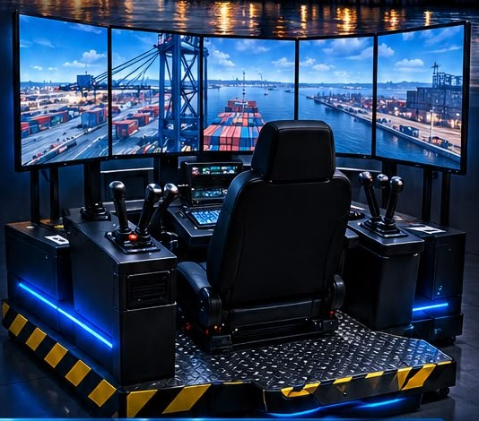

Área 1
Simulación y física
Modelar el movimiento de la grúa y el balanceo de la carga colgada del cable, con viento, límites y colisiones, y validarlo contra modelos matemáticos.
C++DinámicaMétodos numéricos
Buscamos 9 estudiantes de Sistemas, en 3 equipos de 3, para construir, desde cero, el software de un simulador inmersivo de cabina para capacitar a operadores de grúa del puerto, con palancas industriales reales y plataforma de movimiento.
El ITCM desarrolla un simulador de grúa portuaria para el puerto de la región. Es un proyecto multidisciplinario: Mecánica diseña la cabina, Electrónica los controles, Industrial los procesos de capacitación y Sistemas, el equipo al que te invitamos, desarrolla todo el software: el motor de simulación, la física de la grúa y de la carga, el entorno 3D del puerto, la lectura de los controles, la plataforma de movimiento y la consola del instructor. Trabajarás junto a un Doctor en Ciencias de la Computación y un Ingeniero en Electrónica.

Trabajarás en un equipo de 3 integrantes y tendrás un área principal y otra de respaldo. No necesitas dominar todos los campos: algunos serán expertos en uno y no en los demás, y en el equipo se complementan. Al postularte nos dirás qué áreas te interesan más.
Modelar el movimiento de la grúa y el balanceo de la carga colgada del cable, con viento, límites y colisiones, y validarlo contra modelos matemáticos.
Construir el puerto, el buque y los contenedores; iluminación, clima y rendimiento a 60 fps en varias pantallas con perspectiva correcta.
Leer palancas y botoneras industriales, comunicar las computadoras en red, enviar señales a la plataforma de movimiento y automatizar compilaciones.
Crear la consola del instructor (escenarios, fallas, clima), las pantallas de la cabina, los reportes de desempeño y las pruebas con operadores reales.
Buscamos estudiantes que ya tengan formación en las herramientas del proyecto: al menos uno de estos campos.
No necesitas dominarlos todos; si ya hiciste algo con estas herramientas, ¡anímate a postularte!
Beca o estímulo mensual para cada integrante, sujeto a la autorización del recurso por parte del ITCM/TecNM.
Posibilidad de registrar tu participación como servicio social, residencia profesional o tesis, sujeto a aprobación del departamento.
Un producto que usará un puerto para capacitar operadores, con tecnologías de la industria: Unreal Engine 5, C++ y control industrial.
Constancia de participación, crédito en el software y posibilidad de colaborar en artículos y congresos.
Llena el formulario con tu cuenta institucional y adjunta tu CV o portafolio.
Se evalúan conocimientos, proyectos previos, disponibilidad y tu respuesta al reto breve.
Con el Jefe del Departamento de Sistemas y Computación, en la Jefatura del departamento. Muestra un proyecto tuyo hecho en Unity, Godot o Unreal. Te avisaremos por correo el día que te corresponde.
Se publican los 9 seleccionados (3 equipos de 3) y una lista de reserva; se avisa por correo institucional.
Capacitación inicial en el motor y las herramientas, y arranque formal del desarrollo.
Inicia sesión con tu cuenta @cdmadero.tecnm.mx. Te tomará unos 15 minutos; ten a la mano:
Cierre:
Sí, de preferencia. Buscamos estudiantes que ya hayan trabajado con Unreal Engine o Unity (Godot también cuenta), y en la entrevista deberás mostrar un proyecto propio hecho con alguna de estas herramientas. No necesitas dominar todos los campos del proyecto: tu equipo te complementa.
Está pensado para unas 20 horas por semana durante el semestre, con horario acordado con el equipo. En verano se trabaja más intensamente (30 a 35 horas).
Esta convocatoria es para el componente de Sistemas. Si estudias Mecánica, Electrónica o Industrial, pregunta en tu departamento por la participación de tu área en el proyecto.
El monto y la figura (beca o estímulo) dependen de la autorización del recurso. Se informará a los seleccionados antes del inicio.
Es posible, siempre que cumplas los requisitos de créditos de cada modalidad y el departamento lo apruebe. Indícalo en el formulario.
La propiedad intelectual se rige por los lineamientos del TecNM. Tu autoría se reconoce en el registro del software y en las publicaciones en que participes.
El Instituto Tecnológico de Ciudad Madero es el responsable del tratamiento de los datos personales que proporciones en el formulario de postulación: nombre, número de control, carrera, semestre, promedio, datos de contacto, CV y portafolio. Los utilizaremos únicamente para evaluar tu postulación, comunicarnos contigo y, en su caso, integrarte al proyecto. No se transferirán a terceros, salvo las excepciones previstas por la ley. Los datos de quienes no resulten seleccionados se eliminarán al concluir el proceso, salvo los de reserva.
Puedes ejercer tus derechos de acceso, rectificación, cancelación y oposición (ARCO) ante la Unidad de Transparencia del ITCM. Consulta el aviso de privacidad integral.